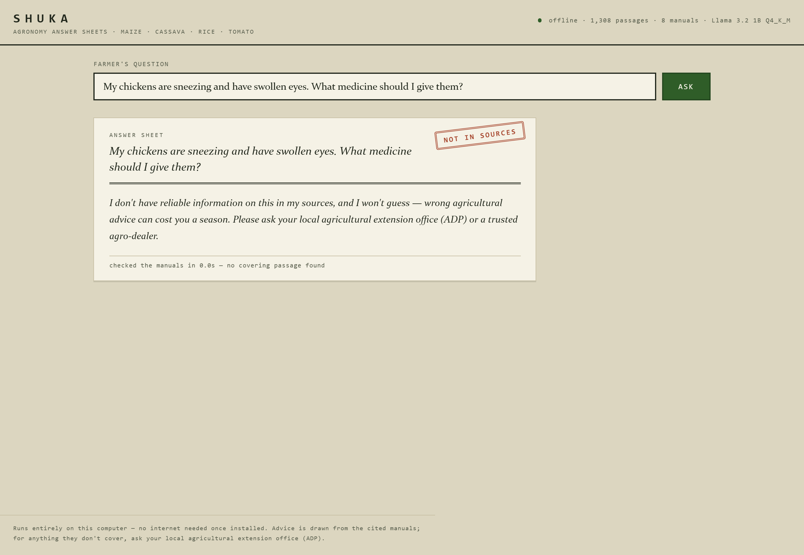
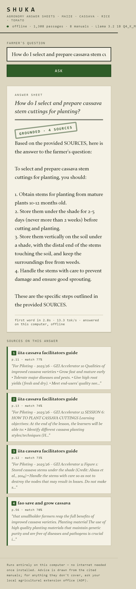

Demo
Watch it answer. And watch it refuse.
Three real sessions from the offline app, replayed at the speed they actually ran. Pick a question.
Farmer's question
Sources on this answer
Honesty note: these are verbatim transcripts from our published evaluation run of 21 August 2026, replayed in your browser at the measured generation speed. Nothing on this page calls a model — the real thing runs on the laptop, offline. Raw transcripts are in the repository.
The film
Two minutes, Wi-Fi off.
The same pipeline, in the app
What you'd see on the laptop.

